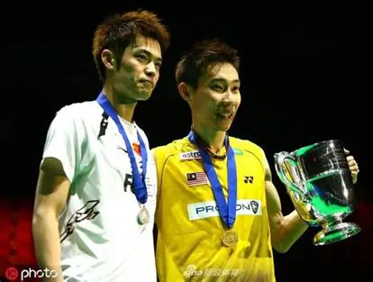
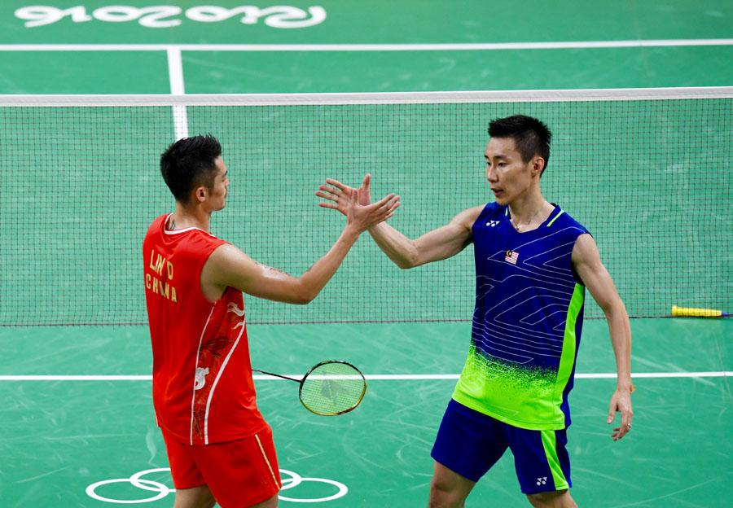
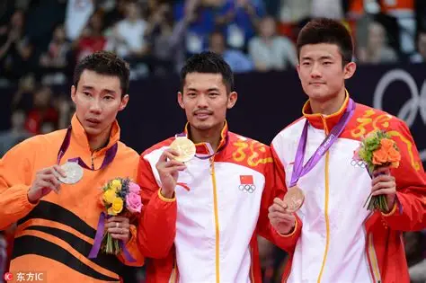
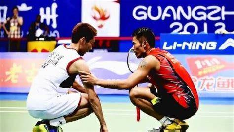

经典赛事
重温那些热血沸腾的名场面，每一场都是羽坛经典

2008年北京奥运会男单决赛
对阵：林丹 VS 李宗伟
林丹职业生涯封神之战，在家门口的奥运赛场，以21-12、21-8的压倒性优势横扫李宗伟，全程压制对手，毫无悬念夺得首枚奥运金牌，开启了自己的全满贯之路。

2012年伦敦奥运会男单决赛
对阵：林丹 VS 李宗伟
羽坛史上最经典的奥运男单决赛，林丹首局15-21告负，第二局21-10扳平，决胜局战至19-19平，最终林丹连得2分逆转绝杀，成功卫冕奥运冠军，达成双圈全满贯。

2011年伦敦世锦赛男单决赛
对阵：林丹 VS 李宗伟
世锦赛史上最经典的对决，双方鏖战三局，决胜局战至20-20平，林丹顶住压力连得2分，以23-21拿下决胜局，第四次夺得世锦赛男单冠军，展现了顶级的心理素质。

2013年广州世锦赛男单决赛
对阵：林丹 VS 李宗伟
林丹职业生涯最具传奇色彩的夺冠之旅，凭借外卡参赛，一路闯入决赛，与李宗伟鏖战三局，决胜局李宗伟因伤退赛，林丹第五次夺得世锦赛冠军，创造外卡夺冠奇迹。
经典赛事完整回顾
2012伦敦奥运会男单决赛 林丹VS李宗伟 完整赛事